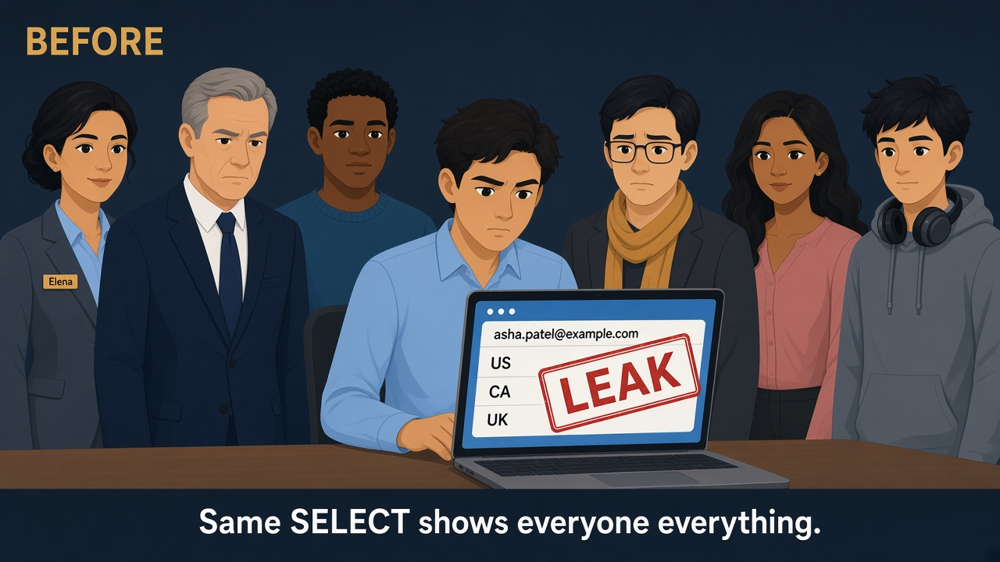
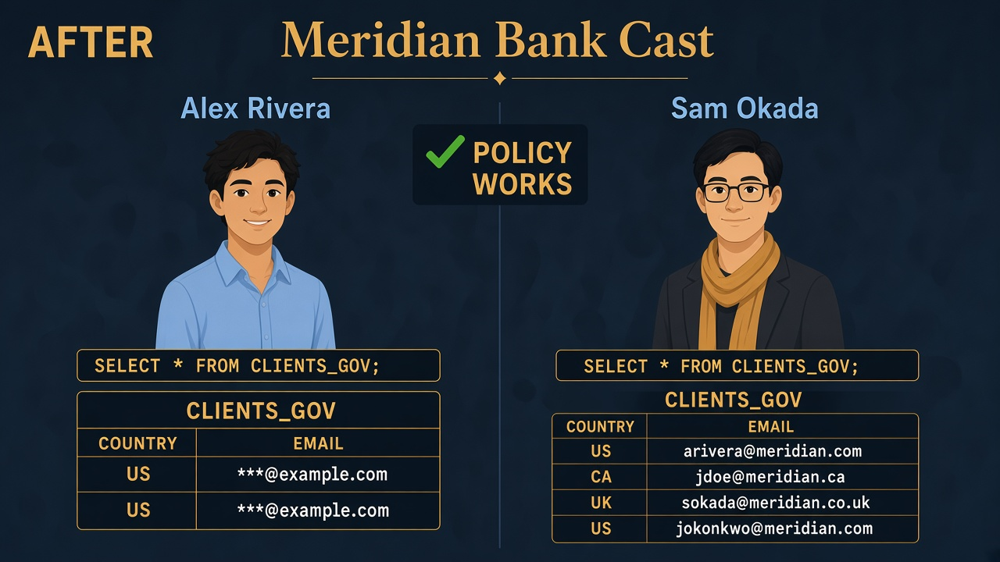

Lab 03 · Wednesday AM · You are Elena · Sam vs Alex
Even clean tables still leak email
Read every Teach first box before you run SQL.
Lab 01 locked the vault door. This lab puts rules on a glass window so the same table looks different for Alex vs Sam.
Business problem
Alex can read curated clients — but he still sees full email addresses.
Sam needs real email for audits. Marcus refuses two copy-paste tables.
Solution (plain English)
One table. Two automatic rules: blur email (unless Compliance), hide countries you’re not allowed to see.
Same SELECT — different answers for Alex vs Sam.

Before
Same SELECT → everyone sees full email and every country. Leak.

After
Same SELECT → Alex masked + US only; Sam full email + more countries.
See it — don’t memorize definitions
Forget theory lists. Look at what actually changes on the screen.
Thing 1 · Masking
Disguise one column
The row is still there. Only the email looks different.
asha.patel@example.com → ***@example.com
Thing 2 · Row filter
Hide whole rows
CA and UK clients vanish for Alex. Not blurred — gone.
Alex: US only Sam: US + CA + UK
Who decides?
The badge you’re wearing
Snowflake checks CURRENT_ROLE() — FR_ANALYST vs FR_COMPLIANCE.
USE ROLE FR_ANALYST; USE SECONDARY ROLES NONE;
Where rules live
RISK_CTRL office
Rules are objects. We hang them on CLIENTS_GOV like stickers on a shelf.
MP_EMAIL_MASK RAP_CLIENT_COUNTRY
Two different problems — don’t mix them up
MaskingColumn disguiseEmail → ***@domain · row still there
Row accessRow filterWhole client disappears if country not allowed
Lab 01 was “Alex can’t open the vault at all.”
Lab 03 is “Alex can open this shelf, but rules change what he sees.”
Badge reminder (from Lab 01)
Humans wear FR_ job badges only.
Policies check CURRENT_ROLE() — so we list FR_ANALYST / FR_COMPLIANCE inside the rule,
not the AR_ key-rings.
0
Only if CREATE POLICY fails
What “APPLY MASKING POLICY” means
It’s a power ACCOUNTADMIN can give Elena’s lab badge: “you may hang masking/row rules on tables.”
Skip this step if Lab 00 already worked.
SQL · give Elena policy powers
USE ROLE ACCOUNTADMIN;
GRANT APPLY MASKING POLICY ON ACCOUNT TO ROLE ROLE_BANK_LAB_ADMIN;
GRANT APPLY ROW ACCESS POLICY ON ACCOUNT TO ROLE ROLE_BANK_LAB_ADMIN;
✓ Then switch back to ROLE_BANK_LAB_ADMIN for the rest
1
Set session + make the policy office
What this does
Put on Elena’s badge, pick the cheap warehouse, open the bank DB, ensure RISK_CTRL / CURATED folders exist.
SQL · context
USE ROLE ROLE_BANK_LAB_ADMIN;
USE WAREHOUSE WH_BANK_XS;
USE DATABASE MERIDIAN_BANK;
CREATE SCHEMA IF NOT EXISTS RISK_CTRL;
CREATE SCHEMA IF NOT EXISTS CURATED;
2
Build the one governed table
Why a copy from LANDING?
Landing stays raw for Jordan. CLIENTS_GOV is the shelf we hang rules on for consumers.
(In production you might use a secure view — table is clearer for learning.)
SQL · CLIENTS_GOV
CREATE OR REPLACE TABLE CURATED.CLIENTS_GOV AS
SELECT CLIENT_ID, FULL_NAME, EMAIL, PHONE, COUNTRY, SSN_LAST4, CREATED_AT
FROM LANDING.CLIENTS;
✓ Same 5 clients as Lab 00 — policies not attached yet
3
Write the email “frosted glass” rule
Read the CASE like English
“When the active badge is Compliance or Lab Admin → show the real email.
Otherwise → replace everything before @ with ***.”
AS (val STRING) RETURNS STRING = this rule takes one email string in, returns one string out.
SQL · masking policy
USE SCHEMA RISK_CTRL;
CREATE OR REPLACE MASKING POLICY MP_EMAIL_MASK AS (val STRING)
RETURNS STRING ->
CASE
WHEN CURRENT_ROLE() IN ('FR_COMPLIANCE', 'ROLE_BANK_LAB_ADMIN') THEN val
ELSE REGEXP_REPLACE(val, '.+@', '***@')
END;
✓ Policy object exists — not yet stuck on the EMAIL column
4
Country permission list (entitlements)
Why a table?
Hard-coding countries inside the policy is brittle. A small table is the “who may see which country” checklist.
Alex → US only. Sam → US, CA, UK.
SQL · entitlement table
CREATE OR REPLACE TABLE RISK_CTRL.RAP_COUNTRY_ENTITLEMENT (
ROLE_NAME STRING,
COUNTRY STRING
);
DELETE FROM RISK_CTRL.RAP_COUNTRY_ENTITLEMENT;
INSERT INTO RISK_CTRL.RAP_COUNTRY_ENTITLEMENT VALUES
('FR_ANALYST', 'US'),
('FR_COMPLIANCE', 'US'),
('FR_COMPLIANCE', 'CA'),
('FR_COMPLIANCE', 'UK'),
('ROLE_BANK_LAB_ADMIN', 'US'),
('ROLE_BANK_LAB_ADMIN', 'CA'),
('ROLE_BANK_LAB_ADMIN', 'UK'),
('FR_DATA_ENGINEER', 'US'),
('FR_DATA_ENGINEER', 'CA'),
('FR_DATA_ENGINEER', 'UK');
5
Write the “hide whole rows” rule
What RETURNS BOOLEAN means
For each row, Snowflake asks the policy: “May this role see this country?”
TRUE = keep the row · FALSE = hide it.
EXISTS (…) = “is there a matching line on the entitlement list?”
SQL · row access policy
CREATE OR REPLACE ROW ACCESS POLICY RISK_CTRL.RAP_CLIENT_COUNTRY
AS (country_code STRING) RETURNS BOOLEAN ->
EXISTS (
SELECT 1
FROM RISK_CTRL.RAP_COUNTRY_ENTITLEMENT e
WHERE e.ROLE_NAME = CURRENT_ROLE()
AND e.COUNTRY = country_code
);
6
Hang both rules on CLIENTS_GOV
Attach ≠ create
Until you ALTER TABLE, policies are unused paperwork. These two lines stick them on EMAIL and COUNTRY.
SQL · attach policies
ALTER TABLE CURATED.CLIENTS_GOV
MODIFY COLUMN EMAIL
SET MASKING POLICY RISK_CTRL.MP_EMAIL_MASK;
ALTER TABLE CURATED.CLIENTS_GOV
ADD ROW ACCESS POLICY RISK_CTRL.RAP_CLIENT_COUNTRY ON (COUNTRY);
7
Let Alex’s and Sam’s key-rings read the shelf
Grants vs policies
Grant = “may you query this table at all?”
Policy = “given that you can, what do you see?”
Both are required.
SQL · grants
GRANT SELECT ON TABLE CURATED.CLIENTS_GOV TO ROLE AR_CURATED_READ;
GRANT SELECT ON TABLE CURATED.CLIENTS_GOV TO ROLE AR_PII_READ;
SELECT 'Lab 03 policies attached' AS status;
8
Proof as Alex
Why SECONDARY ROLES NONE again?
Same Lab 01 trap: without it, your lab-admin coat stays on and you see unmasked email.
Policies look at CURRENT_ROLE() — primary badge only.
SQL · become Alex
USE ROLE FR_ANALYST;
USE SECONDARY ROLES NONE;
USE WAREHOUSE WH_BANK_XS;
USE DATABASE MERIDIAN_BANK;
SQL · same SELECT everyone will run
SELECT CLIENT_ID, EMAIL, COUNTRY
FROM CURATED.CLIENTS_GOV
ORDER BY CLIENT_ID;
✓ Email like ***@example.com · only US rows (no CA/UK)
9
Proof as Sam — identical SQL
Interview soundbite
“We didn’t give Alex a different table. We changed the result with policies evaluated on CURRENT_ROLE().”
SQL · become Sam
USE ROLE FR_COMPLIANCE;
USE SECONDARY ROLES NONE;
SQL · identical SELECT
SELECT CLIENT_ID, EMAIL, COUNTRY
FROM CURATED.CLIENTS_GOV
ORDER BY CLIENT_ID;
✓ Real emails · US + CA + UK rows
Optional full smoke: sql/smoke_lab03_policies.sql (one statement at a time).
Elena’s wrap-up (say this out loud)
“Meridian needed one client shelf, not shadow copies. I built CURATED.CLIENTS_GOV, stored rules in RISK_CTRL,
masked EMAIL unless FR_COMPLIANCE, and filtered rows with a country entitlement list plus a row access policy.
Alex and Sam run the same SELECT — masking and RAP change the answer by CURRENT_ROLE().
Outcome: regulators see centralized policy; analysts don’t see full email or out-of-scope countries.”